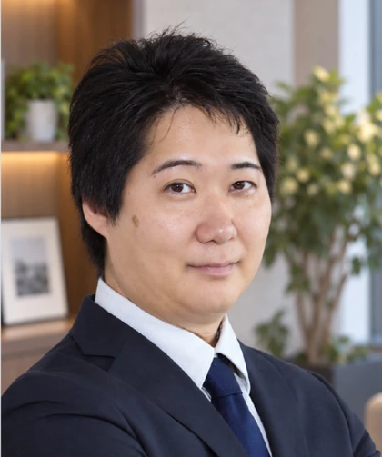
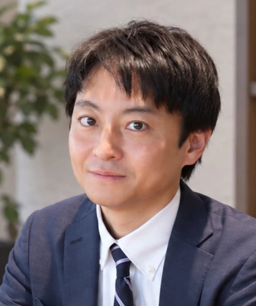

OUR WORK
日の出の仕事
クライアントが向き合う問いから、私たちの仕事を紹介します。
M&A / INTEGRATIONこの買収に、どれだけの価値があるか。
対象会社の事業と財務を調べ、買収の前提やリスクを経営陣と検討します。買収後は、両社の経理担当者と決算の進め方をそろえるところまで支援します。
STRATEGY / FINANCE次の投資を、どの事業に振り向けるか。
事業ごとの利益、投資額、成長余地を比べ、経営会議で何を基準に投資を決めるかを整理します。採用した指標を事業部でどう使うかも、一緒に考えます。
ACCOUNTING / OPERATIONS月次の数字を、もっと早く経営に届けるには。
経理と事業部の担当者に、情報が届く順番や手戻りの理由を聞きます。締めの手順と分担を見直し、実際の決算で運用できる形に整えます。
OUR PEOPLE
ともに働く人
共同代表もクライアントの現場に立ちます。事業戦略、M&A、会計、経営管理。異なる領域を経験してきたメンバーが、それぞれの視点を持ち寄ります。

共同代表・代表取締役古川 瑛司BIG4監査法人出身M&A・事業再生

共同代表・代表取締役木山 雅之BIG4監査法人出身事業ポートフォリオ・資本コスト経営